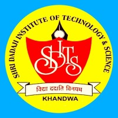
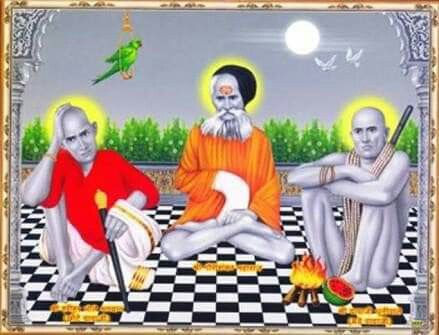

Shri Dadaji Dhuniwale (Bade Dadaji) took samadhi in Khandwa in 1930. No one knows how Dadaji incarnated on this planet. SwamiRevanad (One of the disciples of Dadaji) has written in his book that Dadaji incarnated in Saikheda, a village in Madhya Pradesh. He was first noticed by Shree Gaurishankar ji Maharaj. Later Gaurishankarji accepted him as his disciple and named as Madhav.
On the auspesious name of Sant Shri Dadaji Dhuni wale the name of institute is Shri Dadaji Institute of technology & Science, Khandwa. SDITS is one of the leading private Technical and Professional institutes in Madhya Pradesh today ,having campus in lush green out skirts of Khandwa. The first ISO 9001:2000 Certified Technical Institute in East Nimar Region was started in 2004. Institute functions under the patronage of Dadaji Dhuniwale Professional Education & Development Co-operative Ltd., Khandwa & is managed by Technocrats who have excelled in their respective profession. Since inception it is endeavoring for the quality and excellence in the technical education. All the courses of the institute are approved by AICTE Delhi, Govt. of India. Department of the Technical Education, Govt. of M.P. and are affiliated to Rajiv Gandhi Proudyogiki Vishwavidyalaya, Technical University of Madhya Pradesh.
Within a short span of time the institute has developed into a leading engineering and professional college in the region with state of the art infrastructure, faculty members and facilities. Performing well in University Exams and student are already placed in MNC's and performing well in reputed national /International industries and universities.
The institute is committed to excel in areas of engineering, technology and management by enhancing its facilities, highly qualified and committed faculty drawn from reputed academic institutions of the country and repute & senior professionals from industry as well the instate benchmark against top engineering college's in India.